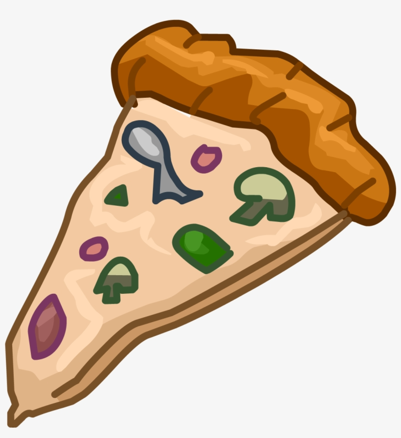

Anchovy Pizza

How could you go wrong with pizza mate?
Ingredients:
- 4 anchovy fillets
- half fresh red chilli, sliced
- extra virgin olive oil
- half lemon, zest and juice of
- 3 tablespoons tomato sauce
- 50g mozarella
- 1 tablespoon of parsley
- sea salt and pepper
Steps:
- Cut the fillets in half and add to a bowl of sliced chilli, couple of spoons of virgin olive oil
and the lemon zest
- Squeeze a little bit of lemon juice onto the mix and mix'em up
- Let the anchovies sit in the marinade for 15 minutes
- Smeer the tomato sauce evenly over the pizza base and scatter torn pieces of mozarella
- Evenly lay over the anchovy fillets, scatter over the chilli and sprinkle the parsley and seasoning
- Cook until golden and crisp
Return to homepage